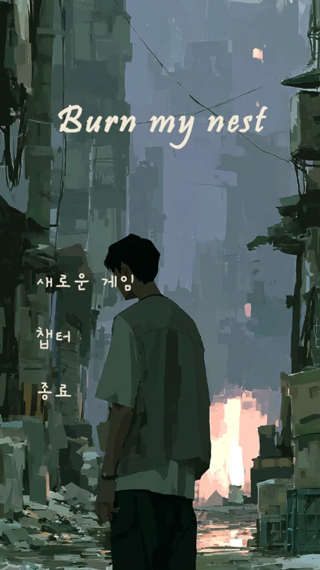
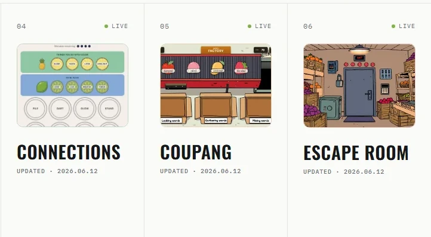
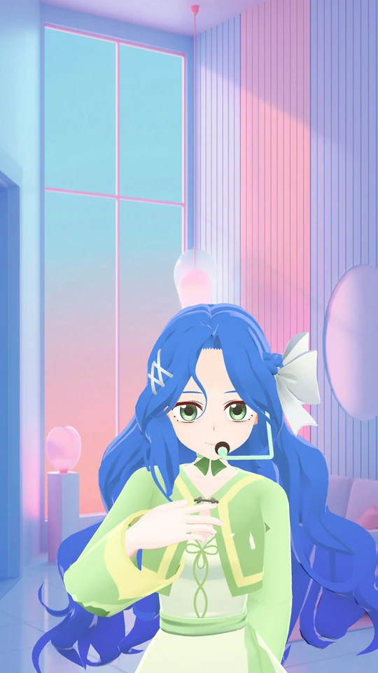
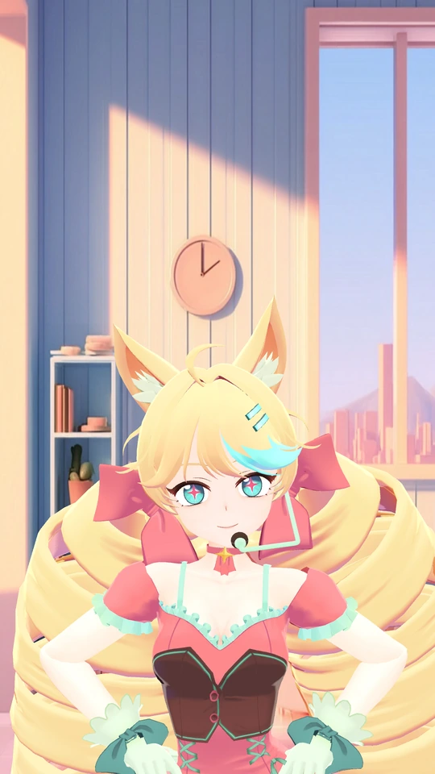
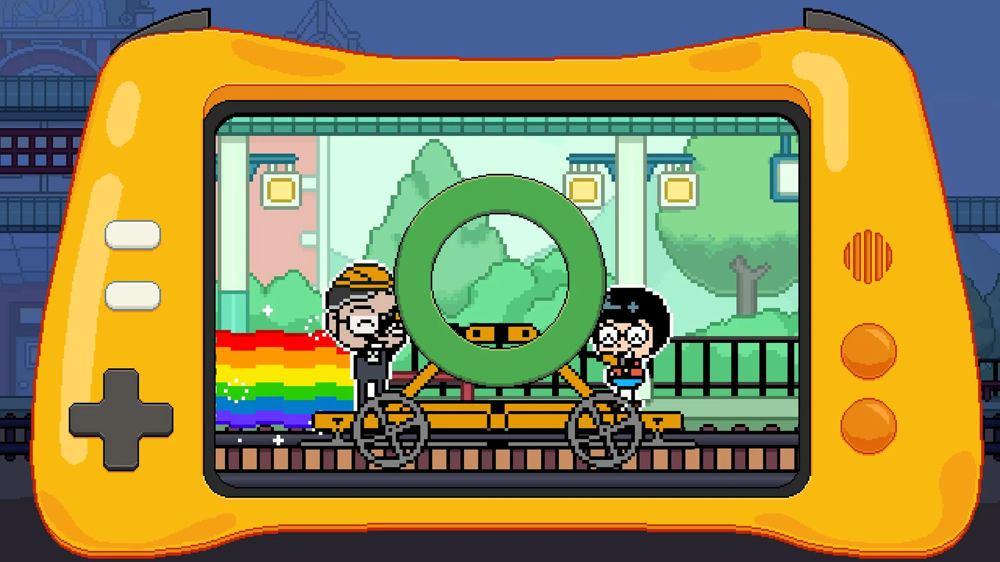
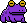
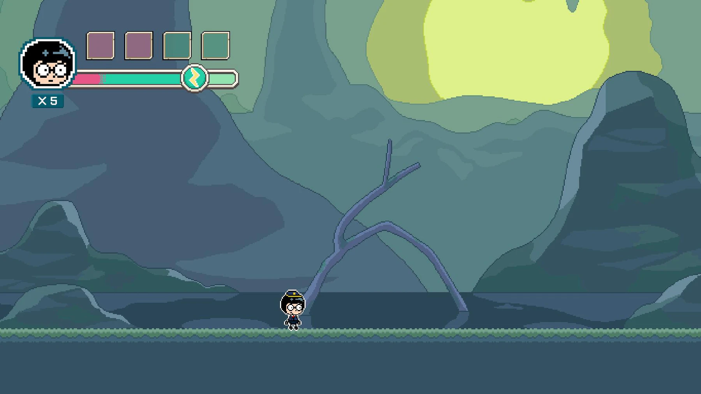
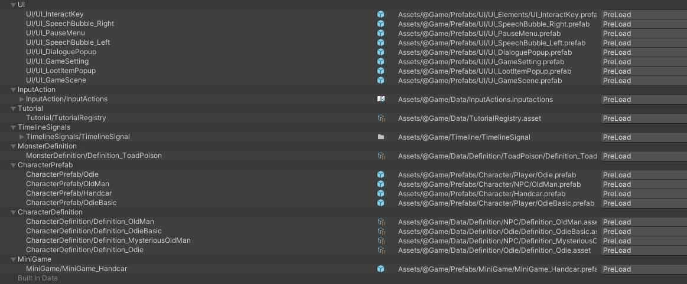
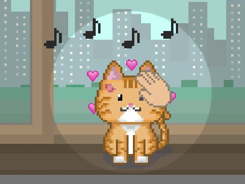
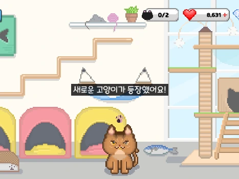

NOTE RUSH
음치인 미호가 음표를 모으며 수련한다는
설정을 리듬 액션으로 풀어낸 게임입니다.
- 연속 음표 획득으로 피버 타임 진입
- 운석, UFO 등 장애물을 피해 고득점 목표

04Burn My Nest2026.07 – 2026.08 장면마다 다른 터치 조작을 구현한 세로형 2D 게임
05Creverse Web Games2026.06 – 2026.07 어휘 학습을 세 가지 방식으로 재구성한 웹 게임
캐릭터 대화·에피소드·영상통화·미니게임을 연결한 앱입니다.
미니게임과 영상통화의 Unity 콘텐츠를 담당했습니다.
캐릭터와 대화하고 에피소드를 즐길 수 있는 앱입니다.
미니게임과 영상통화 화면의 3D 캐릭터를 담당했습니다.
음치인 미호가 음표를 모으며 수련한다는
설정을 리듬 액션으로 풀어낸 게임입니다.
사채업자에게 쫓기는 소희의 상황을 짧은 추격전으로 풀어낸 러너 액션 게임입니다.
플레이 결과를 점수와 순위로 정리해 보여주는
두 게임의 공통 시스템입니다.
하나의 WebGL 빌드에서 화면 비율과 Safe Area를 감지해 PC와 모바일 UI 배치를 나눴습니다.
React Native 영상통화 화면에 Unity 3D 캐릭터를 통합했습니다.
통화 상태에 따라 듣기·생각·말하기 행동을 전환합니다.

통화 상태 이벤트를 하나의 캐릭터 상태로 변환해, 앱의 대화 흐름과 애니메이션 전환 기준을 맞췄습니다.

화면 재진입 시 런타임과 렌더링 상태가 어긋나지 않도록 초기화·정지·재개 순서를 분리했습니다.
 앱React Native통화 화면과 사용자 흐름
앱React Native통화 화면과 사용자 흐름
 네이티브 브리지iOS · Android앱과 Unity 요청 전달
네이티브 브리지iOS · Android앱과 Unity 요청 전달



플레이어와 몬스터의 입력은 분리하고, 겹치는 이동·전투·상호작용은 독립 모듈로 구성했습니다.
플레이어는 입력, 몬스터는 FSM으로 같은 행동 모듈을 호출해 로직 중복을 줄였습니다.
 PLAYER
PLAYER

MONSTER공격 모션과 실제 타격 시점이 어긋나지 않도록 탐지·공격 전환·유효 프레임 판정을 분리했습니다.
유효 프레임에서 한 번만 피해를 적용해 중복 판정을 방지했습니다.
Tiled 오브젝트 속성을 포털·스폰·보상 데이터로 변환해, 맵 배치가 장면 이동과 진입 위치로 이어지도록 구성했습니다.



BGM은 장면이 바뀌어도 자연스럽게 이어지고, 반복 오브젝트는 캐시와 풀로 재사용하도록 구성했습니다.


아픈 고양이를 돌보고 치료한 뒤 입양 보내는
2D 픽셀아트 육성 시뮬레이션입니다.
고양이를 수집하는 대신, 건강을 회복한 고양이에게 새 가족을 찾아주는 육성 게임입니다.


기획·개발·아트·사운드를 혼자 맡아 Google Play 출시를 완료했습니다.